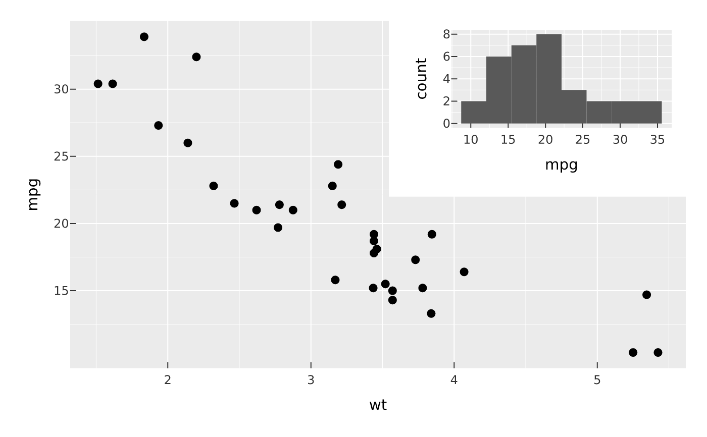

Place plot as an inset over base, positioned by fractional coordinates
(0–1) of the chosen reference box. Returns a 1-cell PlotComposition carrying
the inset (compose it further or render directly).
Usage
inset(
base,
plot,
left = 0.6,
bottom = 0.6,
right = 0.98,
top = 0.98,
align_to = c("panel", "plot", "full"),
on_top = TRUE,
shadow = NULL
)Arguments
- base
A PlotSpec or
PlotCompositionto draw underneath.- plot
The PlotSpec to overlay.
- left, bottom, right, top
Inset position as fractions (0–1).
- align_to
Reference box the fractions are measured in, as in patchwork's
inset_element():"panel"(default): the base plot's panel area. For a faceted plot this is the area spanned by all panels (from the first panel to the last, the strips and gaps between them included)."plot": the base plot without its title, subtitle, caption and tag, axes and legends included (inside the plot margin)."full": the wholebasecell, plot margin included.
When
baseis a composition of several plots there is no single plot to align to, and every inset is placed in the whole figure ("full").- on_top
Draw the inset above (
TRUE) or below the base.- shadow
Optional drop shadow cast by the inset, from
vellum::vl_shadow()(e.g.vl_shadow(dx = 2, dy = 3, blur = 6)).
Details
Up to vellumplot 0.21.1 every inset was placed in the whole base
cell, whatever align_to said; pass align_to = "full" for that placement.
A plot with a locked aspect ratio (coord_fixed(), coord_sf(),
coord_polar(), or theme(aspect.ratio =)) is fitted inside the inset
box: the box shrinks in one direction to the plot's own shape, keeping
the side nearest the edge it sits on (a box in the right half keeps its
right edge, one in the top half its top edge), so its background and
border hug the panel rather than framing empty bands.
Each inset's viewport is named "inset-<k>" (the k-th inset of the
composition), so it can be found with vellum::node_names().
Examples
a <- vplot(mtcars) |> mark_point(x = wt, y = mpg)
b <- vplot(mtcars) |> mark_histogram(x = mpg, bins = 8)
inset(a, b, left = 0.5, bottom = 0.45, right = 1, top = 1)
